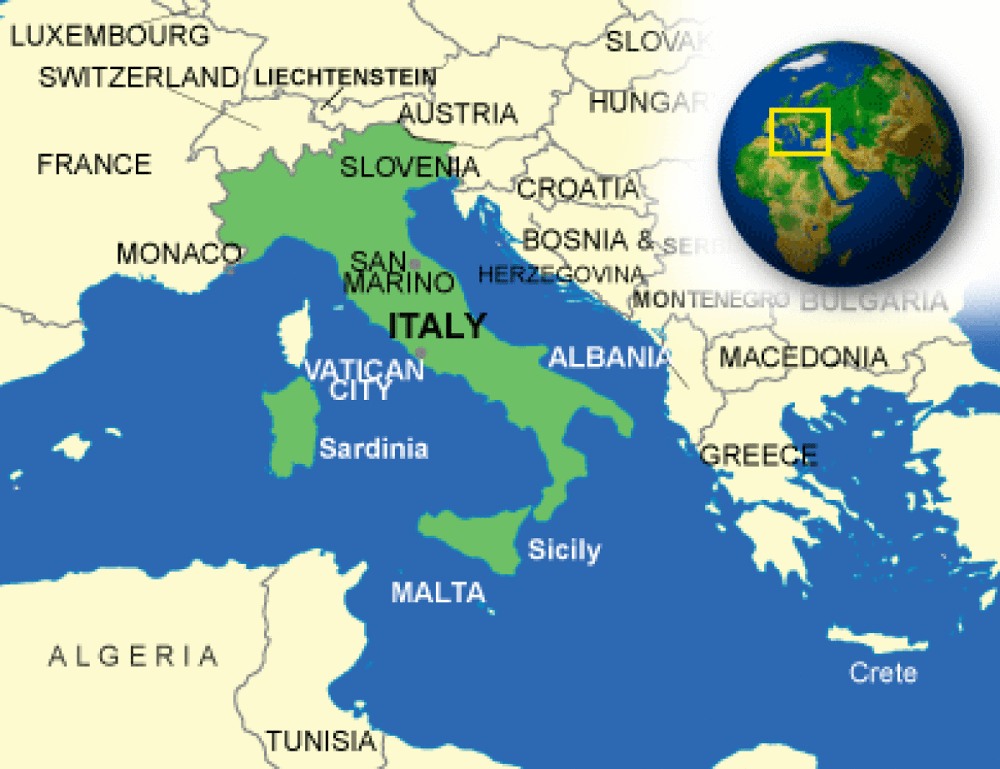

The Wayback Machine - https://web.archive.org/web/20230921121313/https://www.countryreports.org/country/Italy.htm

Where is Italy located?
What countries border Italy?

Italy Weather
What is the current weather in Italy?
Italy Facts and Culture
What is Italy famous for?
- Cultural Attributes: Italians living in the warmer south enjoy a leisurely life and take their time to accomplish business. In contrast, those... More
- Family: Strong, traditional ties bind the Italian family together. Family association is of great importance. A faster pace of life is... More
- Personal Apperance: Italy is a major center of the European fashion industry and Italians believe it is important to dress well at... More
- Recreation: Italy is a nation of soccer enthusiasts. The game is called calcio in Italy. Sunday afternoon league games are televised... More
- Diet: An Italian breakfast is very light, consisting of a cup of coffee, and a roll. Lunch, the main meal, is... More
- Food and Recipes: When eating with guests, Italians do not usually hurry; a meal may last one to four hours. Compliments on the... More
- Visiting: Italians enjoy visiting friends, family, and neighbors, especially on holidays and Sundays. Guests invited to dinner often take a bottle... More
- Dating: Dating is much the same as in other Western countries and is done either in groups or as couples. Marriage... More
Italy Facts
What is the capital of Italy?
| Capital | Rome |
| Government Type | Parliamentary republic |
| Currency | Euros (EUR) |
| Total Area |
116,347 Square Miles 301,340 Square Kilometers |
| Location | Southern Europe, a peninsula extending into the central Mediterranean Sea, northeast of Tunisia |
| Language | Italian (official), German (parts of Trentino-Alto Adige region are predominantly German-speaking), French (small French-speaking minority in Valle d'Aosta region), Slovene (Slovene-speaking minority in the Trieste-Gorizia area) |
| GDP - real growth rate | 0.8% |
| GDP - per capita (PPP) | $35,800.00 (USD) |
Italy Demographics
What is the population of Italy?
| Ethnic Groups | Italian (includes small clusters of German-, French-, and Slovene-Italians in the north and Albanian-Italians and Greek-Italians in the south) |
| Languages | Italian is the official language. There are significant French and German-speaking minorities, and Slovene is spoken by some. Many Italians are bilingual. |
| Nationality Adjective | Italian |
| Nationality Noun | Italian(s) |
| Population | 62,402,659 |
| Population Growth Rate | 0.34% |
| Population in Major Urban Areas | ROME (capital) 3.298 million; Milan 2.909 million; Naples 2.373 million; Turin 1.613 million; Palermo 915,000; Bergamo 784,000 |
| Predominant Language | Italian (official), German (parts of Trentino-Alto Adige region are predominantly German-speaking), French (small French-speaking minority in Valle d'Aosta region), Slovene (Slovene-speaking minority in the Trieste-Gorizia area) |
| Urban Population | 68.4% |
Italy Government
What type of government does Italy have?
- Executive Branch: Chief of State: President Sergio MATTARELLA (since 3 February 2015) Head of Government: Prime Minister Giuseppe CONTE (since 1 June 2018);... More
- Suffrage: 18 years of age; universal except in senatorial elections, where the minimum age is 25 More
- Citizenship: Citizenship by birth: no Citizenship by descent only: at least one parent must be a citizen of Italy Dual citizenship recognized: yes Residency... More
- National Holiday: Republic Day, 2 June (1946) More
- Constitution: History: previous 1848 (originally for the Kingdom of Sardinia and adopted by the Kingdom of Italy in 1861); latest enacted... More
- Independence: 17 March 1861 (Kingdom of Italy proclaimed; Italy was not finally unified until 1871) More
Italy Video
YouTube: Devin Graham Italy Takeover! Rome, Pisa & Vatican City
Italy Geography
What environmental issues does Italy have?
- Overview: Italy covers 116,300 square miles (301,225 sq. km.). Its prominent geographical feature is the 500-mile-long Italian Peninsula, which is shaped... More
- Climate: Italy's climate is generally pleasant. Although summer temperatures can rise into the mid-90s with high humidity, evenings are considerably cooler,... More
- Border Countries: Austria 430 km, France 488 km, Holy See (Vatican City) 3.2 km, San Marino 39 km, Slovenia 199 km, Switzerland... More
- Environment - Current Issues: Air pollution from industrial emissions such as sulfur dioxide; coastal and inland rivers polluted from industrial and agricultural effluents; acid... More
- Environment - International Agreements: Party To: Air Pollution, Air Pollution-Nitrogen Oxides, Air Pollution-Persistent Organic Pollutants, Air Pollution-Sulfur 85, Air Pollution-Sulfur 94, Air Pollution-Volatile Organic... More
- Terrain: Mostly rugged and mountainous; some plains, coastal lowlands More
Italy Economy
How big is the Italy economy?
- Economic Overview: Italy’s economy comprises a developed industrial north, dominated by private companies, and a less-developed, highly subsidized, agricultural south, with a... More
- Industries: Tourism, machinery, iron and steel, chemicals, food processing, textiles, motor vehicles, clothing, footwear, ceramics More
- Currency Name and Code: Euros (EUR) More
- Export Partners: Germany 13.3%, France 11.8%, United States 5.9%, Spain 5.4%, Switzerland 5.4%, United Kingdom 4.7% More
- Import Partners: Germany 16.5%, France 8.8%, China 7.7%, Netherlands 5.5%, Spain 4.7% More
Italy News and Current Events
What current events are happening in Italy?
Source: Google News
Italy Travel Information
What makes Italy a unique country to travel to?
Country Description
Italy is a developed democracy with a modern economy. The Holy See is a sovereign entity that serves as the ecclesiastical, governmental, and administrative capital of the Roman Catholic Church, physically located within the State of the Vatican City inside Rome, with a unique, non-traditional economy. San Marino is a developed, constitutional democratic republic, also independent of Italy, with a modern economy. Tourist facilities are widely available.
Crime
Italy has a moderate rate of crime. You should exercise extra caution at night and at train stations, airports, nightclubs, bars, and outdoor cafes. If you are drinking heavily, your ability to judge situations and make decisions may be impaired, making you a target for crime. Young drinkers are particularly vulnerable to robbery and physical and sexual assault.Petty crimes such as pick-pocketing, theft from parked cars, and purse snatching are serious problems, especially in large cities. Pick-pockets sometimes dress like businessmen. You should not be lulled into a false sense of security by believing that well-dressed individuals are not potential pick-pockets or thieves. Most reported thefts occur at crowded tourist sites, on public buses and trains, and at the major railway stations: Rome's Termini; Milan's Centrale; Florence's Santa Maria Novella; and Naples's Centrale at Piazza Garibaldi. For more information on trains and security, please see the Italian railway police’s advice for travelers. You should also be alert to theft in Milan’s Malpensa Airport, particularly at car rental agencies. Clients of Internet cafes in major cities are also targeted. Be careful with your bag or purse, as thieves on motor scooters are very quick and can snatch a purse off of your arm from a moving scooter. Resisting these thieves can be hazardous, as some tourists have suffered broken arms and collarbones.
Thieves in Italy often work in groups or pairs. Pairs of accomplices or groups of children are known to divert tourists' attention so that another can pick-pocket them. In one particular routine, one thief drops or spills something on the victim; a second thief assists the victim in cleaning up the mess; and the third discreetly takes the victim's belongings. Criminals on crowded public transportation slit the bottoms of purses or bags with a razor blade or sharp knife removing the contents.
Some travelers in Rome, Florence, and Naples have reported incidents where criminals used drugs to assault or rob them. These incidents have been reported near Rome’s Termini train station; at bars and cafes near Rome’s Colosseum, Colle Oppio, Campo de Fiori, and Piazza Navona; and at bars and cafes in the center of Florence and Naples. Criminals using this tactic “befriend” you at a train station, restaurant, café, or bar, and then offer you a drink laced with a sleeping drug. When you fall asleep, criminals steal your valuables and may sexually assault you. Some victims of these assaults in Rome have required hospitalization and two cases resulted in death.
Thieves are also known to have impersonated police officers in order to steal. The thief shows you a circular plastic sign with the words "police" or “international police" and then in perfect English asks to see your identification and your money. U.S. citizens should be aware that local police will generally exit their own vehicles when speaking with members of the public. Also, plainclothes undercover units rarely attempt to pull over vehicles without a marked car accompanying them. If this happens to you, you should insist on seeing the officer's identification card (documento) before handing over your wallet as impersonators tend not to carry forged documents. You should immediately report thefts or other crimes to the actual police.
Be alert to the possibility of carjackings and thefts while you are waiting in traffic or stopped at traffic lights. This has been a particular problem in Catania, Sicily. Use particular caution while driving at night on highways, when thieves are more likely to strike. U.S. citizens have reported break-ins of their rental cars during stops at highway service areas; thieves smash car windows and steal everything inside. The theft of small items such as radios, luggage, cameras, briefcases, and even cigarettes from parked cars is prevalent. Vehicles parked near beaches during the summer can be broken into and robbed of valuables. Lock car doors whenever you park and do not leave packages in your car in plain view.
The U.S. Secret Service in Rome is assisting Italian law enforcement authorities in investigating an increase in the appearance of ATM skimming devices. These devices are attached to legitimate bank ATMs, usually located in tourist areas, and capture the account information stored electronically on the card’s magnetic strip. The devices consist of a card reader installed over the legitimate reader and a pin-hole video camera mounted above the keypad that records the customer’s PIN. ATMs with skimming devices installed may also allow normal transactions to occur. The victim’s information is sold, traded online, or encoded on another card, such as a hotel key card, to access the compromised account.
Organized criminal groups operate throughout Italy, but are more prevalent in the south. They occasionally resort to violence to intimidate or settle disputes. Though the activities of such groups are not generally targeted at tourists, visitors should be aware that innocent bystanders could be injured.
Don’t buy counterfeit or pirated goods, even if they are widely available. Not only are the bootlegs illegal to bring back into the United States, but if you purchase them, you may also be breaking local law.
According to Italian law, anyone caught buying counterfeit goods (for example, DVDs, CDs, watches, purses, bags, belts, sunglasses, etc.) is subject to a fine of no less than EUR 1,000. Police in major Italian cities enforce this law to varying degrees. You are advised to purchase products only from stores and other licensed retailers to avoid unknowingly buying counterfeit and illegal merchandise.
Criminal Penalties
While you are traveling in Italy, you are subject to its laws even if you are a U.S. citizen. Foreign laws and legal systems can be vastly different than our own, and criminal penalties vary from country to country. There are also some things that might be legal in Italy, but still illegal in the United States; For instance, you can be prosecuted under U.S. law if you buy pirated goods. Engaging in sexual conduct with children or using or disseminating child pornography in a foreign country is a crime prosecutable in the United States.Arrest notifications in the host country: You should try to remain aware of local laws and their implications. If you break local laws in Italy, your U.S. passport will not help you avoid arrest or prosecution. If you are arrested in Italy, Italian authorities are required to notify the nearest U.S. embassy or consulate of your arrest. To ensure that the United States is aware of your circumstances, request that the police and prison officials notify the nearest U.S. embassy or consulate as soon as you are arrested or detained overseas.
Languages
Italian is the official language. There are significant French and German-speaking minorities, and Slovene is spoken by some. Many Italians are bilingual.
Medical Facilities and Health Information
Medical facilities are available but may be limited outside urban areas. Public hospitals, though generally free of charge for emergency services, sometimes do not maintain the same standards as hospitals in the United States, so you are encouraged to obtain insurance that would cover a stay in a private Italian hospital or clinic. It is almost impossible to obtain an itemized hospital bill from public hospitals, as required by many U.S. insurance companies because the Italian National Health Service charges one inclusive rate for care services and room and board.In parts of southern Italy, the lack of adequate trash disposal and incineration sites has led to periodic accumulations of garbage in urban and rural areas. In some cases, residents have burned garbage, resulting in toxic emissions that can aggravate respiratory problems.
The U.S. Navy initiated a public health evaluation in the Naples area in 2008. After finding levels of bacterial and chemical contamination of potential health concern, particularly in samples of area well water, the Navy recommended all personnel living off-base in the Naples area use only bottled water for drinking, cooking, ice-making, and brushing teeth.
Safety and Security
Several major earthquake fault lines cross Italy. Principal Italian cities, with the exception of Naples, do not lie near these faults; however, smaller tourist towns, such as Assisi, do lie near faults and have experienced earthquakes. An earthquake severely damaged the town of L’Aquila in 2009. General information about disaster preparedness is available online from the U.S. Federal Emergency Management Agency (FEMA). Detailed information on Italy's fault lines is available from the U.S. Geological Survey (USGS).Italy also has several active volcanoes generating geothermal events. Mt. Etna, on the eastern tip of the island of Sicily, has been intermittently erupting since 2000. Mt. Vesuvius, located near Naples, is currently capped and not active. Activity at Mt. Vesuvius is monitored by an active seismic network and sensor system, and no recent seismic activity has been recorded. Two of Italy's smaller islands, Stromboli and Vulcano, in the Aeolian Islands north of Sicily, also have active volcanoes with lava flows. Detailed information on volcano activity in Italy is available from the USGS.
Politically motivated violence in Italy is most often connected to Italian internal developments or social issues. Italian authorities and foreign diplomatic facilities have found bombs outside public buildings, received bomb threats, and have been subjects of letter bombs in the past several years. Organized crime and anarchist movements sometimes use firebombs or Molotov cocktails against buildings or offices. These attacks generally occur at night, and although they have not targeted or injured U.S. citizens, you should remain aware of your surroundings and report any suspicious activity to local authorities.
Demonstrations may have an anti-U.S. character, especially in areas hosting U.S. military bases. Even demonstrations intended to be peaceful have the potential to turn confrontational and possibly escalate into violence. You should take common-sense precautions and follow news reports carefully. Stay up to date by reading the Embassy’s Demonstration Notices.
Italian authorities have made several high-profile arrests involving members or affiliates of transnational terror groups. Like other countries in the Schengen area, Italy’s open borders with its Western European neighbors allow for the possibility of terrorist groups entering/exiting the country with anonymity.
Traffic Safety and Road Conditions
While in Italy, you may encounter road conditions that differ significantly from those in the United States. Italy has one of the highest rates of car accident deaths in the European Union. Streets in historic city centers are often narrow, winding, and congested. Motor scooters are very popular, and scooter drivers often see themselves as exempt from conventions that apply to automobiles.Pedestrians and drivers should be constantly alert to the possibility of a scooter’s sudden presence. Most vehicle-related deaths and injuries involve pedestrians or cyclists who are involved in collisions with scooters or other vehicles. Be particularly cautious if you rent a scooter. You should remain vigilant and alert when walking or cycling near traffic. Pedestrians should be careful, as sidewalks can be extremely congested and uneven. Riders of bicycles, motorcycles, and other vehicles routinely ignore traffic signals and traffic flows, and park and drive on sidewalks. For safety, pedestrians should look carefully in both directions before crossing streets, even when using a marked crosswalk with a green avanti ("walk") light illuminated.
Traffic lights are limited and often disobeyed and a different convention of right-of-way is observed. Italy has over 5,600 kilometers (3,480 mi.) of Autostrada, or superhighways. Commercial and individual vehicles travel and pass on these well-maintained roads at very high speeds. In rural areas, a wide range of speeds on highways makes for hazardous driving. Roads are generally narrow and often have no guardrails. Travelers in northern Italy, especially in winter, should be aware of fog and poor visibility responsible for multiple-car accidents each year. Most Italian automobiles are equipped with special fog lights. Roadside assistance in Italy is excellent on well-maintained toll roads but limited on secondary roads. Use of safety belts and child restraining devices is mandatory and headlights should be on at all times outside of urban areas.
U.S. citizens driving in Italy should also note that, according to Italian regulation, if a resident of a non-European Union country (e.g., the United States) violates a traffic law, the violator must pay the fine at the time the violation occurs to the police officer issuing the ticket. If the citizen does not or cannot pay the fine at the time, Italian regulation allows the police officer to confiscate the offender’s vehicle (even if the vehicle is a rental vehicle).
For specific information concerning Italian driving permits, vehicle inspection, road tax, and mandatory insurance, contact the Italian Government Tourist Board (ENIT), tel: 212-245-5618; or the A.C.I. (Automobile Club d’Italia) at Via Marsala 14A, 00185 Rome, tel: 39-06-4998-2496. For information on obtaining international driver's licenses, contact AAA or the American Automobile Touring Alliance. Visit the website of Italy’s national tourist office and national authority responsible for road safety.